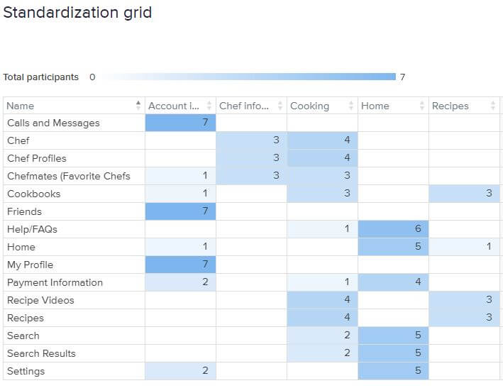
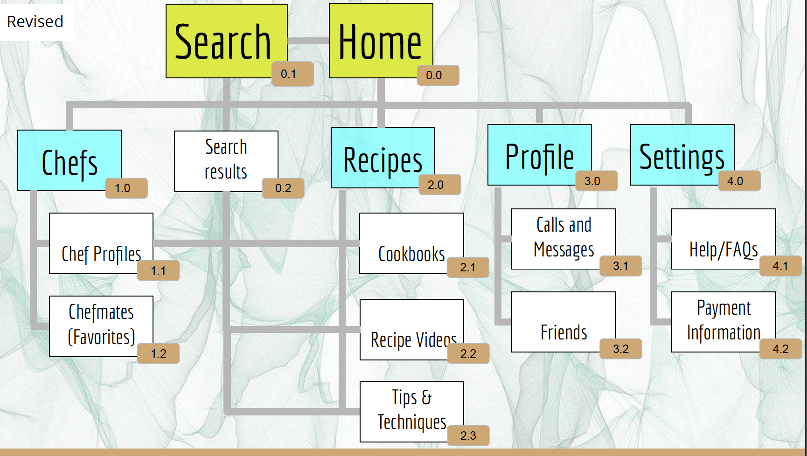
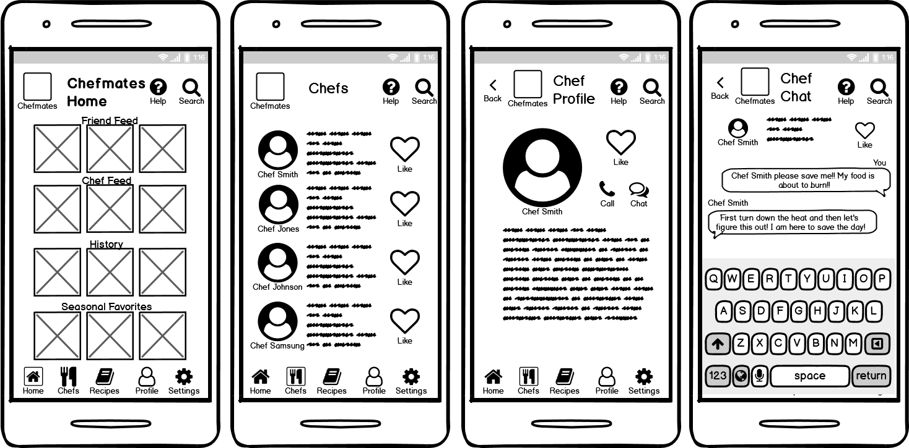
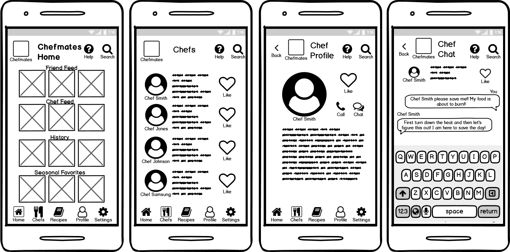
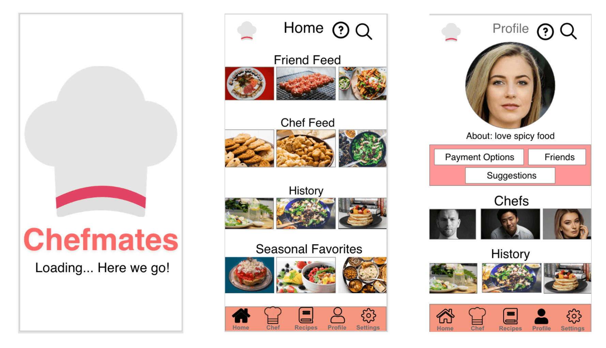
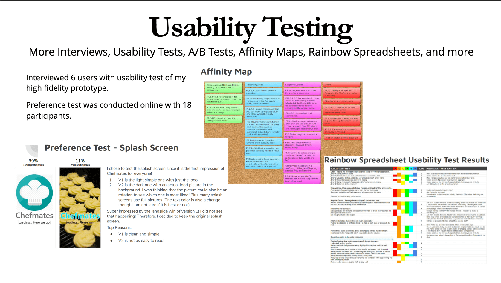
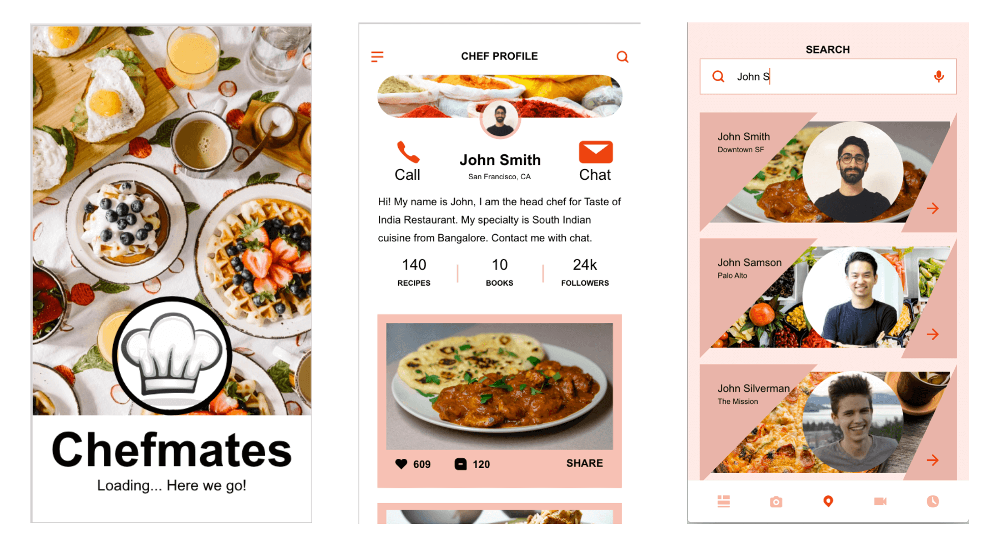

Chefmates Where home cooks connect with their idol chefs!
A UX Case Study - Student Project

My Process

Overview
My Roles:
UX Designer (UX Researcher, Information Architect, UI Designer, Product Designer) Everything from concept.
Clients:
CareerFoundry UX Design Immersion Course and future users of Chefmates
Timeline:
March 2020 - October 2020
Tools:
- Balsamiq
- Adobe XD
- Marvel
- InVision
- Pen and Paper
- Usability Hub
- Optimal Workshop
- Google Suite
- Apple Suite
- Microsoft Suite
Problem
Users need a way to easily and efficiently access the appropriate expert cooking advice because they need an easy way to wow people and reach their cooking goals without needing to do extensive research on sites or in cookbooks.
Solution
Our mission at Chefmates is to be the best app to link expert chefs to home cooks. We have an easy and user friendly design that everyone can have a fun time using to learn to cook while getting expert advice from around the world.
Research
Starting with Inspiration! Competitive Analysis and User Interviews were my way to find what was out there and what was missing.

From using Competitive Analysis during the Understanding phase, I got great findings for both the basics of what was needed as well at what differed between top apps and apps with lower ratings and usage, so I could find a good balance for Chefmates.

While in Observe phase, the greatest impact of user interviews for me was really getting certain aspects of my opinion validated as well as others getting completely flipped by popular vote! It was truly interesting and fun!
Ideation
Next I needed to Conceptualize what were learned during Inspiration so that I could Iterate my design. Below are the Personas, Journey Maps, and Task Flows for Chefmates used to make concrete data from earlier research. Enjoy!

Bringing all the user interview pieces together though the POV phase into personas was a data crunching and imaginative process which really honed in on what my app would be providing and who the app was truly for.
Information Architecture
After setting up the content for my app, I needed to make sure the order for it was most efficient and understandable for users. I did a Card Sort in order to get the best results. Then I edited my sitemap.
 During Ideate phase the design aspect really started to kick in and I found that my sitemap changed a lot after input as well as the way to go through the user flows changed quite a bit as well. Card sorting was really quick and fun!
Wireframe
Now that everything's in order I can start the Iterating on my design! Wireframing, prototyping and UX's favorite a lot of user testing! All to get closer and closer to the best user experience possible.
 

Powering through low and high fidelity prototypes and wireframes I can now work towards high fidelity. Getting one step closer to progressing the design on to the next phase.
Design
Prototype phase was basically what most people who know of UX think UX is, wire framing, low mid and high fidelity prototyping as well as all the various iterations on each. My main lesson from here was how huge of a difference in effort it is to catch things early!
Now that I finally had a product to test I conducted some rounds or testing and redesigned my prototype constantly, even sometimes between interviews!
Testing was fun since I think the feedback and thinking process from people unfamiliar with my app was really enlightening! I really needed to learn how to sort through the feedback that was true and the feedback that was more personal preference to be able to improve my app for a larger group of people than just the people that provided feedback.
Here's where I get input from industry standards and conform to Material Design guidelines while cementing the style for my app in a style guide and design language system. Which is detailed in the extra document at the bottom of the page.
With the style guide finalized I can implement all the improvements to the prototype in order to get my final high fidelity prototype.
Prototype
Although the project is in it's final stages of high fidelity prototyping I am still looking to the future and getting ready for the next rounds of testing. There is always more to do on the journey towards bringing forward the best!
Conclusion
Although the project is in its final stages I am still looking to the future and getting ready for the next rounds of testing. There is always more to do on the journey towards the best!
Future Iterations Plan
- Hypothesis
- Looking back through this process I realize that my original goal and focus was to connect chefs to regular cooks but my app was splitting focus between chefs and recipes. My next step will be to find a way to refocus on the chef-user interactions. Maybe the chefs can have group classes which would teach their recipes? Or and academy style learning of cooking skills?
- Validation
- The main areas to edit for this new hypothesis are the chef profile area as well as merging it with the recipes area. I would need to make sure to minimize friction and pain points for users used to recipe apps that do not focus on the chefs as that is the norm on the market. The timing of this validation will be shown in the timeline.
You've just about made it to the end but I'd like to leave you with a bit more about me. In the About section! As well as a link to a more detailed look at the chefmates process.
Read full case study